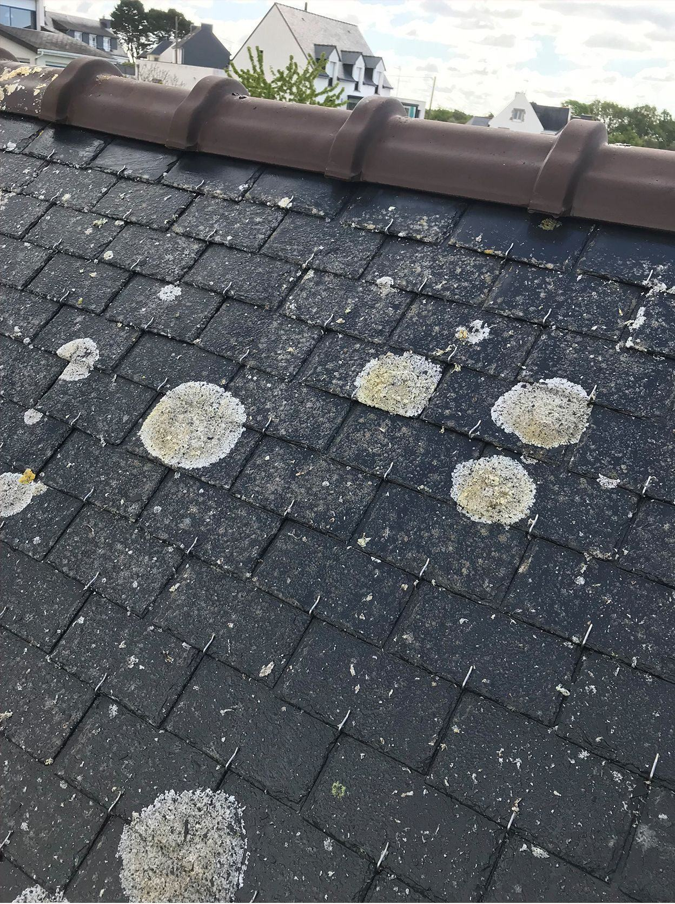
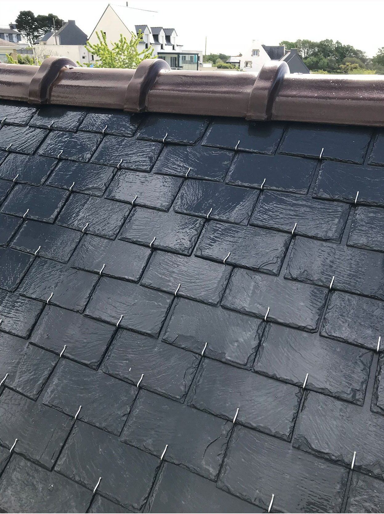
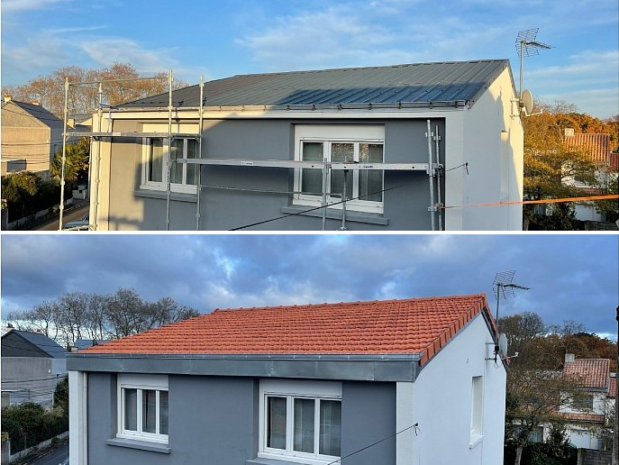

Couvreur · Morbihan (56)
Protégez ce qui vous abrite.Pour longtemps.
Couverture, zinguerie, charpente, isolation et démoussage. Nous nettoyons aussi dallages, terrasses, maisons et locaux professionnels.
- Devis gratuit
- Garantie décennale
- Artisan couvreur
Glissez pour faire tourner la maison
Nos services
Tout pour votre toiture.Du faîtage à la gouttière.
De la tuile cassée à la toiture complète, nous intervenons sur maisons, immeubles et bâtiments professionnels.
-
01
Couverture
Réfection complète ou partielle : ardoise naturelle, tuiles plates, tuiles romanes ou mécaniques, bac acier.
Devis couverture -
02
Fuites
Recherche de fuite, bâchage d’urgence, remplacement de tuiles et réparation après tempête.
Signaler une fuite -
03
Zinguerie
Gouttières, descentes, chéneaux, noues et solins en zinc, cuivre ou aluminium.
Devis zinguerie -
04
Charpente
Contrôle, traitement du bois, renforcement et remplacement de pièces abîmées.
Devis charpente -
05
Isolation
Combles perdus et aménagés, écran sous-toiture. Moins de chaleur perdue en hiver.
Devis isolation -
06
Démoussage
Nettoyage de la toiture, traitement anti-mousse et hydrofuge pour la protéger plus longtemps.
Devis démoussage Voir la simulation en 3D
01 / Toiture
Une toiture,couche après couche.
Choisissez votre couverture, puis montez la toiture : de la charpente aux gouttières, chaque couche a son rôle.
01 / Choisissez la couverture
Ardoise naturelle
Ardoise après ardoise
Sur les liteaux, chaque ardoise est tenue par un crochet inox, rang par rang depuis l’égout. Au sommet, les tuiles faîtières en terre cuite sont scellées au mortier.
- Pente de la maquette
- 40°
- Fixation
- Crochet inox
- Faîtage
- Tuiles faîtières scellées
Glissez pour faire pivoterMaquette illustrative
Vue éclatée
Les cinq couches d’une toiture. Faites glisser le curseur ou touchez une couche pour la poser.
Entretien
Une toiture entretenue dure plus longtemps.
02 / Entretien & nettoyage
Mousses et lichens,partis pour de bon.
Avec les années, mousses et lichens retiennent l’humidité et abîment la couverture. Faites glisser le curseur : le démoussage descend du faîtage vers la gouttière.
Démoussage · simulation 3D
Glissez pour faire pivoterMaquette illustrative
01 / La couverture
La différence se voit.
Faites avancer la simulation pour comparer la toiture encrassée et la toiture nettoyée.
EncrasséNettoyé0 %
- 01
Le diagnostic
Nous vérifions l’état des ardoises ou des tuiles et l’origine de l’encrassement.
- 02
Le nettoyage
Du faîtage vers la gouttière, avec une méthode adaptée au matériau, sans l’abîmer.
- 03
La protection
Un traitement anti-mousse puis un hydrofuge protègent la couverture plus longtemps.
Nettoyage
Propre,du sol au toit.
Au-delà de la toiture, nous nettoyons vos dallages et vos terrasses, votre maison et tout type de locaux professionnels.
-
Dallages
Allées, cours, parkings et abords en dalles, pavés ou béton : mousses, salissures et taches disparaissent.
Devis dallage -
Terrasses
Carrelage, pierre, bois ou béton : votre terrasse retrouve son aspect d’origine, à la sortie de l’hiver comme avant l’été.
Devis terrasse -
Maisons
Un grand nettoyage, à l’intérieur comme à l’extérieur : après des travaux, avant une vente ou un emménagement.
Devis maison -
Locaux professionnels
Bureaux, commerces, cabinets, ateliers, entrepôts : nous nettoyons tout type de locaux professionnels.
Devis locaux
03 / Réalisations
Le travail,en vrai.
Des photos de nos chantiers, prises avant et après les travaux.



AvantAprèsAvis clients
Ils nous ontfait confiance.
Ce que nos clients disent de nos chantiers, sur Google.
-
★★★★★
Avis à ajouter : le texte d’un avis laissé par un client sur Google.
-
★★★★★
Avis à ajouter : le texte d’un avis laissé par un client sur Google.
-
★★★★★
Avis à ajouter : le texte d’un avis laissé par un client sur Google.
Une sélection d’avis publiés par nos clients sur Google, reproduits sans modification et classés du plus récent au plus ancien. Tous nos avis sont consultables sur notre fiche Google.
04 / Diagnostic express
Que voyez-voussur votre toit ?
Touchez ce que vous constatez : votre demande de diagnostic se prépare toute seule. Nous venons ensuite vérifier gratuitement.
05 / Comment ça se passe
Simple,du début à la fin.
- 01
Vous nous appelez
Ou vous remplissez le formulaire. Nous fixons une date de visite.
- 02
Visite et devis
Nous inspectons la toiture ou les surfaces à nettoyer et vous remettons un devis détaillé, gratuit.
- 03
Les travaux
Chantier protégé et sécurisé. Les déchets sont évacués.
- 04
La réception
Nous vérifions le travail ensemble et vous remettons la garantie.
Questions fréquentes
Vos questions,nos réponses.
Le devis est-il payant ?
Non. La visite, le diagnostic et le devis sont gratuits et sans engagement.
Combien coûte une intervention ?
Chaque chantier fait l’objet d’un devis détaillé et gratuit, remis avant toute intervention. Notre taux horaire, nos frais de déplacement et le prix de nos prestations courantes sont indiqués sur la page Nos tarifs.
Faites-vous aussi du nettoyage ?
Oui : dallages, terrasses, maisons et tout type de locaux professionnels (bureaux, commerces, ateliers, entrepôts…). Décrivez-nous ce qu’il faut nettoyer, nous vous proposons une visite et un devis gratuit.
Comment savoir si ma toiture doit être refaite ?
Tuiles cassées ou poreuses, mousse abondante, taches d’humidité au plafond, gouttières qui débordent. Une visite permet de savoir si une réparation suffit. Le diagnostic express vous donne un premier avis.
Vous déplacez-vous en urgence ?
Oui. Après une tempête, nous bâchons la toiture pour la mettre hors d’eau, puis nous réparons. Nous vous aidons aussi pour la déclaration à l’assurance.
Combien de temps durent les travaux ?
Une réparation se fait souvent dans la journée. Une réfection complète prend de quelques jours à quelques semaines selon la surface et la météo. Le planning figure sur le devis.
Quelle TVA s’applique sur les travaux ?
Cela dépend de notre régime de TVA, de votre logement et de la nature des travaux : pour un logement de plus de deux ans, des taux réduits peuvent s’appliquer en rénovation et en isolation. Le devis indique toujours le prix exact, toutes taxes comprises.
Les travaux sont-ils garantis ?
Oui, ils sont couverts par notre assurance décennale. L’attestation vous est remise avec le devis.
Contact
Parlons devotre projet.
Laissez vos coordonnées, nous vous rappelons pour fixer une visite. Le diagnostic et le devis sont gratuits.
- Téléphone
- 07 82 62 78 56
- adolpherudy0@gmail.com
- Secteur
- Tout le Morbihan (56)
Urgence
Fuite, tuiles envolées après une tempête ? Appelez directement : nous mettons votre toiture hors d’eau au plus vite.
Appeler le 07 82 62 78 56